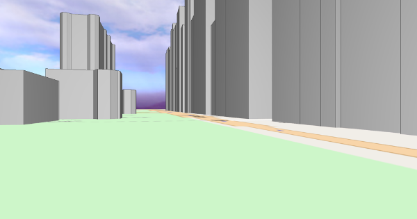

Unfortunately, your browser does not support 3D web graphics ("WebGL"), which are required for this page to work.
This page should work on desktop and laptop computers with most recent browsers (e.g. Firefox, Chrome, Internet Explorer). To date, desktop Safari browsers require some tuning to support 3D web graphics.
For mobile devices (tablets and smartphones), most recent Android-based devices (usually those with Android 4.3 and newer) should support 3D web graphics. Apple's iPhone and iPad series of devices currently does not.
Here's a screenshot of what you are missing:

Open Street View
Click on any location on the map to see a 3D view of the world as seen from that position. Then click and drag the 3D view with your mouse to look around.
Let me know what you think about this page: